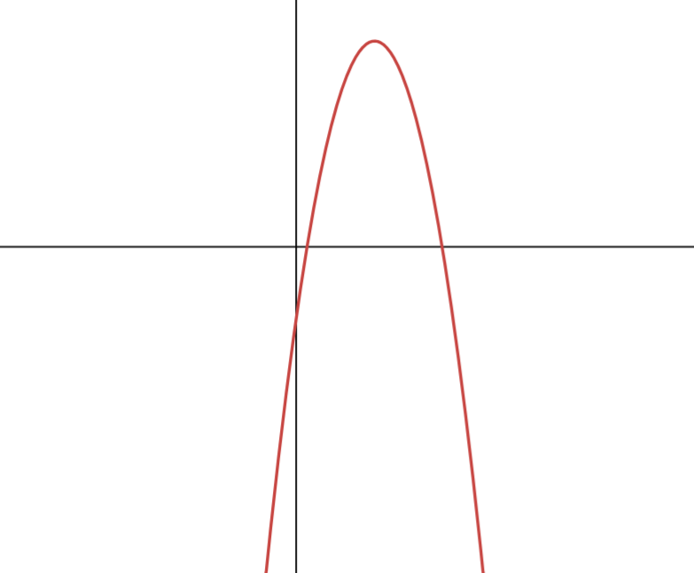
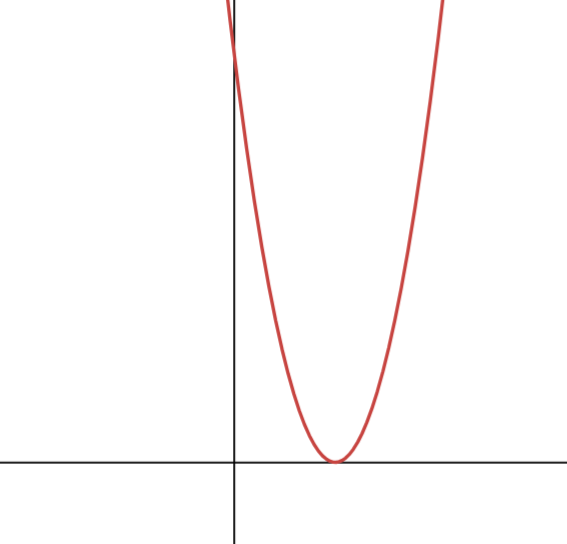

Section 2G: The Discriminant
Understanding the Discriminant
Determine the nature of roots using b² - 4ac
Question 1:
Calculate the value of the discriminant for each of the following functions.
Based on the discriminant value, sketch the general shape of each graph.
a g(x) = 2x² - 3x + 4
b h(x) = -x² + 7x - 3
c j(x) = x² - 8x + 16
Based on the discriminant value, sketch the general shape of each graph.
a g(x) = 2x² - 3x + 4
b h(x) = -x² + 7x - 3
c j(x) = x² - 8x + 16
Solution:
📐 The Discriminant
For ax² + bx + c = 0, the discriminant is: Δ = b² - 4ac
The discriminant determines the number of real roots:
• Δ > 0: Two distinct real roots (graph crosses x-axis twice)
• Δ = 0: One repeated real root (graph touches x-axis once)
• Δ < 0: No real roots (graph does not touch x-axis)
• Δ > 0: Two distinct real roots (graph crosses x-axis twice)
• Δ = 0: One repeated real root (graph touches x-axis once)
• Δ < 0: No real roots (graph does not touch x-axis)
Part a - Step 1: Identify coefficients
g(x) = 2x² - 3x + 4
a = 2, b = -3, c = 4
a = 2, b = -3, c = 4
Already in standard form ax² + bx + c
Part a - Step 2: Calculate the discriminant
Δ = b² - 4ac
Δ = (-3)² - 4(2)(4)
Δ = 9 - 32
Δ = -23
Δ = (-3)² - 4(2)(4)
Δ = 9 - 32
Δ = -23
Substitute a = 2, b = -3, c = 4 into the formula
Part a - Step 3: Interpret the discriminant
Since Δ = -23 < 0:
• No real roots
• Graph does not cross or touch the x-axis
• Since a = 2 > 0, parabola opens upward
• No real roots
• Graph does not cross or touch the x-axis
• Since a = 2 > 0, parabola opens upward
Negative discriminant means the parabola is entirely above the x-axis (opens up)
Sketch for g(x) = 2x² - 3x + 4:

✨ Discriminant = -23 ✨
Part b - Step 1: Identify coefficients
h(x) = -x² + 7x - 3
a = -1, b = 7, c = -3
a = -1, b = 7, c = -3
Already in standard form ax² + bx + c
Part b - Step 2: Calculate the discriminant
Δ = b² - 4ac
Δ = (7)² - 4(-1)(-3)
Δ = 49 - 12
Δ = 37
Δ = (7)² - 4(-1)(-3)
Δ = 49 - 12
Δ = 37
Substitute a = -1, b = 7, c = -3 into the formula
Part b - Step 3: Interpret the discriminant
Since Δ = 37 > 0:
• Two distinct real roots
• Graph crosses the x-axis twice
• Since a = -1 < 0, parabola opens downward
• Two distinct real roots
• Graph crosses the x-axis twice
• Since a = -1 < 0, parabola opens downward
Positive discriminant means two x-intercepts
Sketch for h(x) = -x² + 7x - 3:

✨ Discriminant = 37 ✨
Part c - Step 1: Identify coefficients
j(x) = x² - 8x + 16
a = 1, b = -8, c = 16
a = 1, b = -8, c = 16
Already in standard form ax² + bx + c
Part c - Step 2: Calculate the discriminant
Δ = b² - 4ac
Δ = (-8)² - 4(1)(16)
Δ = 64 - 64
Δ = 0
Δ = (-8)² - 4(1)(16)
Δ = 64 - 64
Δ = 0
Substitute a = 1, b = -8, c = 16 into the formula
Part c - Step 3: Interpret the discriminant
Since Δ = 0:
• One repeated real root
• Graph touches the x-axis at exactly one point
• Since a = 1 > 0, parabola opens upward
• One repeated real root
• Graph touches the x-axis at exactly one point
• Since a = 1 > 0, parabola opens upward
Zero discriminant means the parabola touches the x-axis at the vertex
Sketch for j(x) = x² - 8x + 16:

✨ Discriminant = 0 ✨